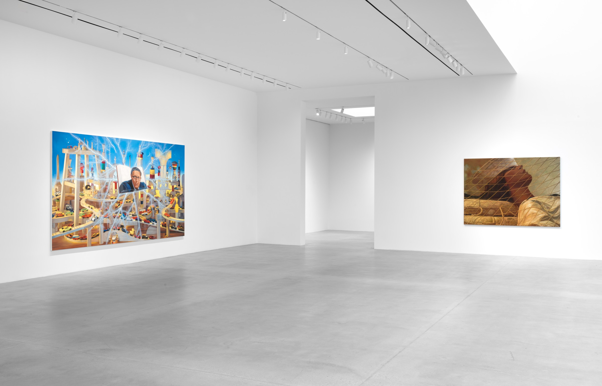

GAGOSIAN · 가고시안
캔버스 위의 침묵
Silence on Canvas

Exhibition poster · 전시 포스터
전시 정보
/ EXHIBITION INFO
ARTIST
작가명을 여기에
PERIOD
Mar 15 – May 30, 2026
GALLERY
Gagosian, 555 W 24th St, New York
ADMISSION
Free · 무료
전시 전경
/ INSTALLATION VIEWS

Installation view · 전시 전경

Installation view · 전시 전경
작품
/ WORKS

작가명, 작품 제목, 연도
재료, 크기
재료, 크기

작가명, 제목, 연도

작가명, 제목, 연도
감상
/ IMPRESSION
미술관에 들어서자마자 공기가 달랐다. 거대한 캔버스들이 벽면을 가득 채우고 있었는데, 그 스케일 앞에서 오히려 조용해졌다. 큰 것이 반드시 큰 소리를 내지는 않는다는 것을.
가장 오래 서 있었던 작품은 오른쪽 끝 방에 있던 것이었다. 회색과 베이지 사이 어딘가에 걸쳐진 색감, 두껍게 쌓인 물감의 질감. 멀리서 보면 고요하고, 가까이 가면 요동치는 표면.
이 갤러리는 올 때마다 조금씩 다르게 느껴진다. 공간이 같아도 내가 달라지는 건지, 작품이 달라지는 건지. 아마 둘 다일 것이다.